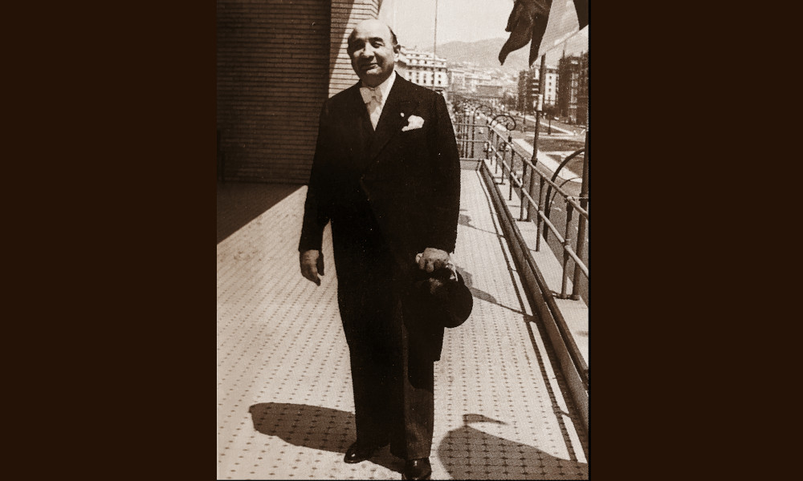

Bossi

Consulta le banche dati della Fondazione
Federico Zeri e ricerca fotografie, documenti,
cataloghi
d'asta, fondi e notizie
sull'antiquario corrente.
Ferruccio Ildebrando Bossi (1884-1970) fu un commerciante genovese attivo nella compravendita di opere d’arte tra gli anni Venti e Settanta del Novecento. Giorgio Batini nei suoi scritti ricorda che l’antiquario possedeva una galleria presso la propria abitazione in via Assarotti 1, dove riceveva privatamente i clienti.
Nonostante si dichiarasse contrario alla specializzazione, trattò soprattutto tessuti, mobili genovesi e dipinti antichi. Nell’arco della carriera vendette e collezionò arte genovese del Seicento; tra gli artisti da lui prediletti figurano Valerio Castello e Alessandro Magnasco.
Ben inserito nell’alta società cittadina ebbe tra i suoi clienti il grande collezionista Angelo Costa (1901-1976).
Nel 1924 venne accusato di una serie di furti di opere d’arte e di contrabbando, vicende rispetto alle quali si dichiarò sempre totalmente estraneo.